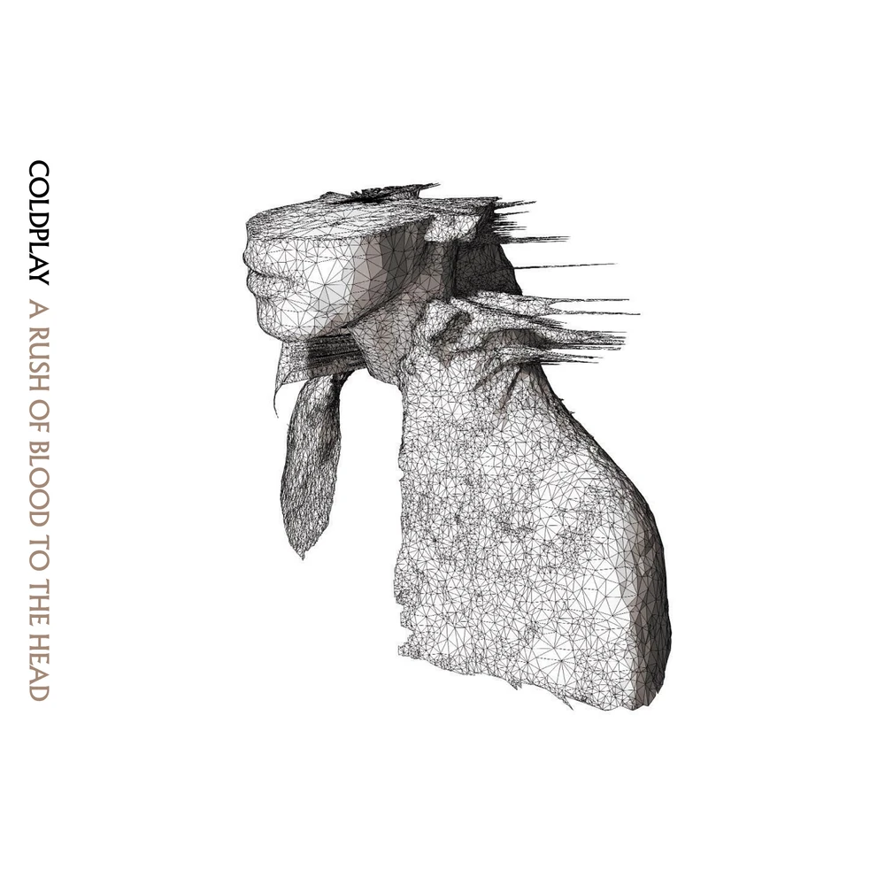

Some notes
I haven't written the actual rating explanation yet.
I haven't written my actual reviews of each of the albums (I just rated them and some tracks as well). The reviews will be where I say [album title] is [artist's name] nth album
I haven't finished ranking tracklistings past A Head Full of Dreams
I haven't customized the colors for anything past A Head Full of Dreams
How I rate things
Elijah's Discography Rankings
Coldplay
.jpg)
About Coldplay
Coldplay (as shown from left to right (except for phil)) is a band comprised of Jonny Buckland (guitar), Chirs Martin (vocals & piano), Guy Berryman (bass), William Champion, and Phil Harvey (who is the creative director and doesn't play an instrument)
15.
Music of the Spheres ★★★ ★★

Music of the Spheres (2021) (Full title being: Music of the Spheres Volume 1: From Earth With Love) is Coldplay's 9th LP.
Music of the Spheres
Higher Power
Humankind
Alien Choir
Let Somebody Go
Human Heart
People of the Pride
Biutyful
Music of the Spheres II
My Universe
Infinity Sign
Coloratura
14.
Kaleidoscope★★★ ★ ★
The Kalideoscope EP (2017) is Coldplay's 12th EP.

All I Can Think About is You
Miracles (Someone Special)
A L I E N S
Something Just Like This (Tokyo Remix)
Hypnotised
13.
A Head Full of Dreams ★★★★ ★
A Head Full of Dreams (2015) is Coldplay's 7th LP.

A Head Full of Dreams
Birds
Hymn for the Weekend
Everglow
Adventure of a Lifetime
Fun
Kalideoscope
Army of One
X Marks the Spot
Amazing Day
Colour Spectrum
Up&Up
12.
Safety ★★★★ ★
The Safety EP (1998) is Coldplay's 1st EP.

11.
Moon Music ★★★★ ★
Moon Music (2024) (Full title being: Music of the Spheres Volume 2: Moon Music) is Coldplay's 10th LP.
10.
Brothers & Sisters ★★★★ ★
Brothers and Sisters (1999) is Coldplay's 2nd EP.

9.
The Blue Room★★★★ ★
The Blue Room (1999) is Coldplay's 3rd EP.
8.
Mylo Xyloto ★★★★ ★
Mylo Xyloto (2011) is Coldplay's 5th LP.
7.
Prospekt's March ★★★★ ★
Prospekt's March (2008) is Coldplay's 8th EP.

6.
Everyday Life ★★★★ ★
Everyday Life (2019) is Coldplay's 8th LP.

5.
A Rush of Blood to the Head ★★★★★
A Rush of Blood to the Head (2002) is Coldplay's 2nd LP.
4.
Parachutes ★★★★★
Parachutes (2000) is Coldplay's 1st LP.

3.
Ghost Stories ★★★★★
Ghost Stories (2014) is Coldplay's 6th LP.

2.
X&Y★★★★★
X&Y (2005) is Coldplay's 3rd LP.

1.
Viva La Vida or Death and All His Friends ★★★★★
Viva La Vida or Death and All His Friends (2008) is Coldplay's 4th LP.

Tally Hall

About Tally Hall
Tally Hall (as shown from left to right) is a band comprised of Andrew Horowitz (green tie), Ross Federman (grey tie), Rob Cantor (yellow tie), Joe Hawley (red tie), and Zubin Sedghi (blue tie).
15.
Just a Friend >★★★ ★★
Just a Friend is the 1st single released by Tally Hall under Needlejuice Records.

14.
<8bit>hawaiipartii★★★ ★ ★
hawaiipartii (not to be mistaken for Hawaii: Part II) by Miracle Musical (ミラクルミュージカル) is a collection of 8-bit chiptunes based on the Hawaii: Part II album.

13.
Sketches 3D ★★★ ★ ★
Sketches 3D is the only album by edu (who is Andrew Horowitz under a psuedonym).

12.
Not a Trampoline ★★★★ ★
Not a Trampoline is the only album by Rob Cantor.

11.
Hawaii Part II: Part ii ★★★★ ★
Hawaii Part II: part ii is a collection of demos from the Hawaii: Part II album by Miracle Musical (ミラクルミュージカル)

10.
Complete Demos ★★★★ ★
Complete Demos is the first compilation of demos by Tally Hall.

9.
Joe Hawley Joe Hawley ★★★★ ★
Joe Hawley Joe Hawley is the only solo album by Joe Hawley.

8.
Admittedly Incomplete Demos ★★★★ ★
Admittedly Incomplete Demos is the second compilation of demos by Tally Hall.

7.
Candle on the Water★★★★ ★
Candle on the Water is the second single by Miracle Musical (ミラクルミュージカル).

6.
Hawaii Part II ★★★★★
Variations on a Cloud is the first single by Miracle Musical (ミラクルミュージカル).

5.
Hawaii Part II ★★★★★
Hawaii Part II is the only album by Miracle Musical (ミラクルミュージカル) which is a side project spearheaded by band member Joe Hawley and with contributions from every band member except Andrew.

4.
Hawaii Part II ★★★★★
Turn the Lights Off is the 2nd single released by Tally Hall under Needlejuice Records.

3.
Marvin's Marvelous Mechanical Museum (2005) ★★★★★
Marvin's Marvelous Mechanical Museum (2005) is Tally Hall's 1st LP.

2.
Marvin's Marvelous Mechanical Museum (2008) ★★★★★
Marvin's Marvelous Mechanical Museum (2008) is a remake of Tally Hall's 1st LP.

1.
Good & Evil ★★★★★
Good & Evil is Tally Hall's 2nd LP.